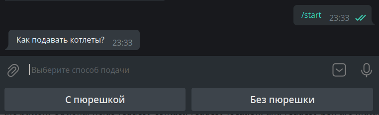
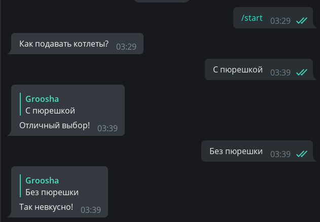
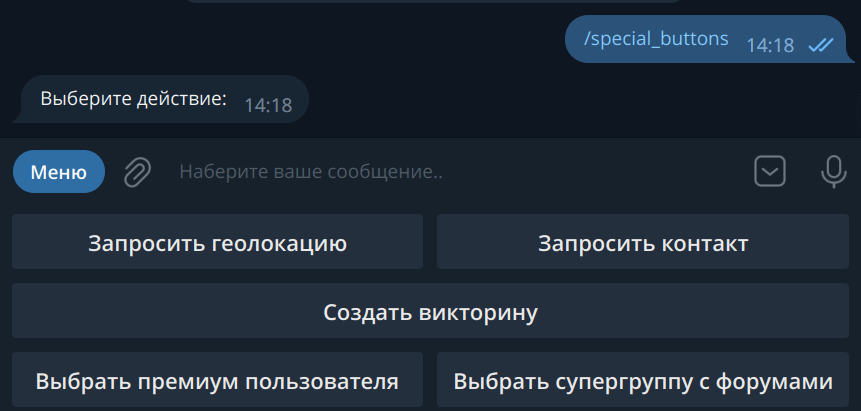
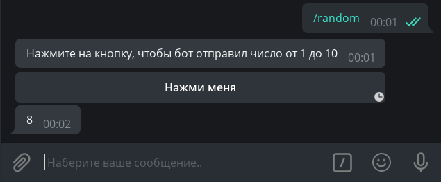
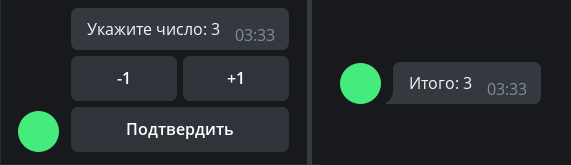
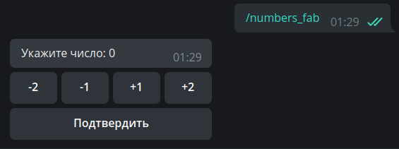

按钮¶
使用的 aiogram 版本：3.7.0
在本章中，我们将了解 Telegram 机器人的一项绝妙功能——按钮。首先，为了避免混淆，让我们确定命名。附在设备屏幕底部的按钮，我们将称为**普通**按钮，而直接附加到消息的按钮，我们将称为**内联**按钮。再看一遍图片：

普通按钮¶
按钮作为模板¶
这种按钮从 2015 年远古时代与 Bot API 一起出现，本质上是消息模板（除了几种特殊情况，我们稍后会讨论）。原理很简单：按钮上写的是什么，就会被发送到当前聊天中。相应地，为了处理这样的按钮点击，机器人必须识别传入的文本消息。
让我们编写一个处理器，在按下 /start 命令时发送带有两个按钮的消息：
@dp.message(Command("start"))
async def cmd_start(message: types.Message):
kb = [
[types.KeyboardButton(text="С пюрешкой")],
[types.KeyboardButton(text="Без пюрешки")]
]
keyboard = types.ReplyKeyboardMarkup(keyboard=kb)
await message.answer("Как подавать котлеты?", reply_markup=keyboard)
尽管 Telegram Bot API 允许指定字符串而不是 KeyboardButton 对象，
但在尝试使用字符串时，aiogram 3.x 会抛出验证错误，这不是 bug，而是 aiogram 的一个特性。
现在就这样生活吧 🤷♂️
好的，让我们启动机器人并被巨大的按钮震撼：

看起来不太好。首先，我们想让按钮更小一点，其次，将它们放在水平方向。为什么它们会这么大呢？这是因为默认情况下，"按钮"键盘在智能手机上应该占用与常规字母键盘相同的空间。要缩小按钮，需要为键盘对象指定额外的 resize_keyboard=True 参数。
但如何将垂直按钮替换为水平按钮呢？从 Bot API 的角度来看，键盘是一个按钮的数组，或者更简单地说，是行的数组。让我们重写代码以使其看起来更好，为了更加强调，我们还添加 input_field_placeholder 参数，当普通键盘处于活跃状态时，它将替换空输入行中的文本：
@dp.message(Command("start"))
async def cmd_start(message: types.Message):
kb = [
[
types.KeyboardButton(text="С пюрешкой"),
types.KeyboardButton(text="Без пюрешки")
],
]
keyboard = types.ReplyKeyboardMarkup(
keyboard=kb,
resize_keyboard=True,
input_field_placeholder="Выберите способ подачи"
)
await message.answer("Как подавать котлеты?", reply_markup=keyboard)
我们看到——确实很好看：

现在需要教会机器人对这些按钮的点击做出反应。如上所述，需要完全匹配文本。我们将使用 魔法过滤器 F 来做到这一点，我们将在另一章更详细地讨论它：
# 新导入！
from aiogram import F
@dp.message(F.text.lower() == "с пюрешкой")
async def with_puree(message: types.Message):
await message.reply("Отличный выбор!")
@dp.message(F.text.lower() == "без пюрешки")
async def without_puree(message: types.Message):
await message.reply("Так невкусно!")

要删除按钮，需要发送一条带有特殊"删除"键盘的新消息，类型为 ReplyKeyboardRemove。例如：await message.reply("Отличный выбор!", reply_markup=types.ReplyKeyboardRemove())
键盘生成器¶
为了更动态地生成按钮，可以使用键盘生成器。我们需要以下方法：
add(<KeyboardButton>)— 将按钮添加到生成器的内存中；adjust(int1, int2, int3...)— 按int1, int2, int3...按钮制作行；as_markup()— 返回准备好的键盘对象；button(<params>)— 添加具有给定参数的按钮，按钮类型（回复或内联）自动确定。
创建一个 4×4 的编号键盘：
# 新导入！
from aiogram.utils.keyboard import ReplyKeyboardBuilder
@dp.message(Command("reply_builder"))
async def reply_builder(message: types.Message):
builder = ReplyKeyboardBuilder()
for i in range(1, 17):
builder.add(types.KeyboardButton(text=str(i)))
builder.adjust(4)
await message.answer(
"Выберите число:",
reply_markup=builder.as_markup(resize_keyboard=True),
)

普通键盘对象还有两个有用的选项：
one_time_keyboard 用于点击后自动隐藏按钮，以及 selective 用于仅向组中的某些成员显示键盘。
它们的使用留待独立学习。
特殊的普通按钮¶
在撰写本章时，Telegram 中存在六种不是普通消息模板的特殊普通按钮类型。它们用于：
- 发送当前地理位置；
- 发送您的联系方式和电话号码；
- 创建民意调查/测验；
- 选择并向机器人发送具有所需条件的用户数据；
- 选择并向机器人发送具有所需条件的（超级）组或频道数据；
- 启动 Web 应用程序（WebApp）。
让我们更详细地讨论它们。
发送当前地理位置。这里一切都很简单：用户在哪里，就发送那些坐标。这将是静态的地理位置，而不是自动更新的实时位置。当然，狡猾的用户可能会欺骗他们的位置，有时甚至在整个系统级别（Android）。
发送您的联系方式和电话号码。按下按钮时（经过预先确认），用户将他们的联系方式和电话号码发送给机器人。那些狡猾的用户可能会忽略该按钮并发送任何联系方式，但在这种情况下，您可以采取措施：只需在处理器或过滤器中检查 message.contact.user_id == message.from_user.id 的相等性。
创建民意调查/测验。按下按钮时，系统会提示用户创建民意调查或测验，然后将其发送到当前聊天。需要传递KeyboardButtonPollType对象，
可选参数 type 用于指定民意调查类型（民意调查或测验）。
选择并向机器人发送具有所需条件的用户数据。显示一个用户选择窗口，来自点击按钮的用户的聊天列表。需要传递KeyboardButtonRequestUser对象，其中需要指定以任何方式生成的请求 ID 和条件，例如"机器人"、"拥有 Telegram Premium 订阅"等。选择用户后，机器人将收到类型为UserShared的服务消息。
选择并向机器人发送具有所需条件的聊天。显示一个用户选择窗口，来自点击按钮的用户的聊天列表。需要传递KeyboardButtonRequestChat对象，其中需要指定以任何方式生成的请求 ID 和条件，例如"组或频道"、"用户是聊天的创建者"等。选择用户后，机器人将收到类型为ChatShared的服务消息。
启动 Web 应用程序（WebApp）。按下按钮时，打开WebApp。需要传递WebAppInfo对象。 本书暂不涵盖 Web 应用。
不过，看代码更简单：
@dp.message(Command("special_buttons"))
async def cmd_special_buttons(message: types.Message):
builder = ReplyKeyboardBuilder()
# row 方法允许您明确形成一行
# 从一个或多个按钮。例如，第一行
# 将由两个按钮组成...
builder.row(
types.KeyboardButton(text="Запросить геолокацию", request_location=True),
types.KeyboardButton(text="Запросить контакт", request_contact=True)
)
# ...第二行由一个组成...
builder.row(types.KeyboardButton(
text="Создать викторину",
request_poll=types.KeyboardButtonPollType(type="quiz"))
)
# ...第三行再次由两个组成
builder.row(
types.KeyboardButton(
text="Выбрать премиум пользователя",
request_user=types.KeyboardButtonRequestUser(
request_id=1,
user_is_premium=True
)
),
types.KeyboardButton(
text="Выбрать супергруппу с форумами",
request_chat=types.KeyboardButtonRequestChat(
request_id=2,
chat_is_channel=False,
chat_is_forum=True
)
)
)
# 暂时没有 WebApp，抱歉 :(
await message.answer(
"Выберите действие:",
reply_markup=builder.as_markup(resize_keyboard=True),
)

最后，两个处理下面两个按钮点击的处理器模板：
# 新导入
from aiogram import F
@dp.message(F.user_shared)
async def on_chat_shared(message: types.Message):
print(
f"Request {message.user_shared.request_id}. "
f"User ID: {message.user_shared.user_id}"
)
@dp.message(F.chat_shared)
async def on_chat_shared(message: types.Message):
print(
f"Request {message.chat_shared.request_id}. "
f"User ID: {message.chat_shared.chat_id}"
)
内联按钮¶
URL 按钮¶
与普通按钮不同，内联按钮不是附加到屏幕底部，而是附加到发送它们的消息。在本章中，我们将考虑两种这样的按钮：URL 和 Callback。另一种 — Switch — 将在内联模式章节中考虑。
本书不会涉及 Login 和 Pay 按钮。如果有人想帮助至少使用授权或支付的工作代码，请在GitHub上创建 Pull Request。谢谢！
最简单的内联按钮属于 URL 类型，即"链接"。仅支持 HTTP(S) 和 tg:// 协议
# 新导入
from aiogram.utils.keyboard import InlineKeyboardBuilder
@dp.message(Command("inline_url"))
async def cmd_inline_url(message: types.Message, bot: Bot):
builder = InlineKeyboardBuilder()
builder.row(types.InlineKeyboardButton(
text="GitHub", url="https://github.com")
)
builder.row(types.InlineKeyboardButton(
text="Оф. канал Telegram",
url="tg://resolve?domain=telegram")
)
# 为了能够显示 ID 按钮，
# 用户必须有 False 标志 has_private_forwards
user_id = 1234567890
chat_info = await bot.get_chat(user_id)
if not chat_info.has_private_forwards:
builder.row(types.InlineKeyboardButton(
text="Какой-то пользователь",
url=f"tg://user?id={user_id}")
)
await message.answer(
'Выберите ссылку',
reply_markup=builder.as_markup(),
)
让我们特别关注代码的中间块。事实上，在 2019 年 3 月，Telegram 开发人员添加了禁用转发消息中的用户个人资料转换的功能。当尝试为已禁用转发转换的用户创建 URL ID 按钮时，机器人会收到错误 Bad Request: BUTTON_USER_PRIVACY_RESTRICTED。因此，在显示此类按钮之前，需要找出上述设置的状态。为此，可以调用getChat方法，在响应中检查 has_private_forwards 字段的状态。如果等于 True，则尝试添加 URL ID 按钮将导致错误。
回调¶
对于 URL 按钮，基本上没有什么好讨论的，所以让我们转向今天节目的主要内容——回调按钮。这是一个非常强大的东西，您几乎可以在任何地方遇到。文章上的反应按钮（赞），@BotFather 上的菜单等。本质是什么：回调按钮有一个特殊的值（data），您的应用程序通过它识别被点击的内容以及需要做什么。选择正确的 data 非常重要！还值得注意的是，与普通按钮不同，点击回调按钮可以让您做几乎任何事情，从订购披萨到在超级计算机集群上启动计算。
让我们编写一个处理器，在 /random 命令时发送带有回调按钮的消息：
@dp.message(Command("random"))
async def cmd_random(message: types.Message):
builder = InlineKeyboardBuilder()
builder.add(types.InlineKeyboardButton(
text="Нажми меня",
callback_data="random_value")
)
await message.answer(
"Нажмите на кнопку, чтобы бот отправил число от 1 до 10",
reply_markup=builder.as_markup()
)
但如何处理点击呢？如果之前我们对传入消息使用了 message 处理器，现在我们将使用 callback_query 处理器来处理回调。我们将根据按钮的"值"进行定向，即其 data：
@dp.callback_query(F.data == "random_value")
async def send_random_value(callback: types.CallbackQuery):
await callback.message.answer(str(randint(1, 10)))

哦，那些是什么时钟？事实证明，Telegram 服务器期望我们确认回调已交付，否则在 30 秒内会显示一个特殊的图标。要隐藏时钟，需要在回调上调用 answer() 方法（或使用 API 方法 answer_callback_query()）。通常，answer() 方法不需要传递任何内容，但可以调用一个特殊的窗口（从顶部弹出或覆盖屏幕）：
@dp.callback_query(F.data == "random_value")
async def send_random_value(callback: types.CallbackQuery):
await callback.message.answer(str(randint(1, 10)))
await callback.answer(
text="Спасибо, что воспользовались ботом!",
show_alert=True
)
# 或简单的 await callback.answer()

读者可能会问：在处理的哪个阶段使用 answer() 方法回复回调？通常，主要是不要忘记通知 Telegram 已收到回调请求，但我建议在最后放置 answer() 调用，原因如下：如果在处理回调的过程中发生了错误，机器人遇到未处理的异常，用户会看到半分钟的旋转时钟，并理解出了问题。否则，时钟会消失，用户会留下不知道他们的请求是否成功执行的疑问。
请注意
在 send_random_value 函数中，我们调用 answer() 方法不是在 message 上，而是在 callback.message 上。这是因为回调处理器不处理消息（类型为Message），
而是处理回调（类型为CallbackQuery），它有不同的字段，消息本身只是其中的一部分。还要注意，message 是按钮所附加的消息（即发送此类消息的发件人是机器人本身）。如果要了解谁点击了按钮，请查看 from 字段（在您的代码中，这将是 callback.from_user，因为单词 from 在 Python 中是保留的）
关于回调中的 message 对象
如果消息是从内联模式发送的，则回调中的 message 字段将为空。
您将无法获取此类消息的内容，除非事先将其保存在某个地方。
让我们转到一个更复杂的例子。假设向用户显示一条带有数字 0 的消息，下面有三个按钮：+1、-1 和确认。用户可以使用前两个编辑数字，后者删除整个键盘，固定更改。我们将在字典中的内存中存储值（我们将稍后讨论有限自动机）。
# 这里存储用户数据。
# 由于这是内存中的字典，重启时会被清除
user_data = {}
def get_keyboard():
buttons = [
[
types.InlineKeyboardButton(text="-1", callback_data="num_decr"),
types.InlineKeyboardButton(text="+1", callback_data="num_incr")
],
[types.InlineKeyboardButton(text="Подтвердить", callback_data="num_finish")]
]
keyboard = types.InlineKeyboardMarkup(inline_keyboard=buttons)
return keyboard
async def update_num_text(message: types.Message, new_value: int):
await message.edit_text(
f"Укажите число: {new_value}",
reply_markup=get_keyboard()
)
@dp.message(Command("numbers"))
async def cmd_numbers(message: types.Message):
user_data[message.from_user.id] = 0
await message.answer("Укажите число: 0", reply_markup=get_keyboard())
@dp.callback_query(F.data.startswith("num_"))
async def callbacks_num(callback: types.CallbackQuery):
user_value = user_data.get(callback.from_user.id, 0)
action = callback.data.split("_")[1]
if action == "incr":
user_data[callback.from_user.id] = user_value+1
await update_num_text(callback.message, user_value+1)
elif action == "decr":
user_data[callback.from_user.id] = user_value-1
await update_num_text(callback.message, user_value-1)
elif action == "finish":
await callback.message.edit_text(f"Итого: {user_value}")
await callback.answer()
似乎一切都有效：

但现在想象一个精明的用户做了以下事情：调用 /numbers 命令（值为 0），增加该值到 1，再次调用 /numbers（该值重置为 0）并点击第一条消息上的"+1"按钮。
会发生什么？机器人会诚实地发送修改文本的请求，值为 1，但由于该消息上已经有数字 1，Bot API 将返回一个错误，即旧文本和新文本匹配，机器人会捕获异常：
Bad Request: message is not modified: specified new message content and reply markup are exactly the same
as a current content and reply markup of the message

您可能会在开始时经常遇到这个错误，尝试编辑消息。一般来说，这样的错误通常表明在消息中生成/更新数据的逻辑存在问题，但有时，如上例所示，可能是预期的行为。
在这种情况下，我们将忽略整个错误，因为我们只关心最终结果，这肯定是正确的。MessageNotModified 错误属于 Bad Request 类别，因此我们有一个选择：忽略这类所有错误，或捕获所有 BadRequest 类并尝试按错误文本识别具体原因。
为了不过度复杂化示例，我们将使用第一种方法，并稍微更新 update_num_text() 函数：
# 新导入！
from contextlib import suppress
from aiogram.exceptions import TelegramBadRequest
async def update_num_text(message: types.Message, new_value: int):
with suppress(TelegramBadRequest):
await message.edit_text(
f"Укажите число: {new_value}",
reply_markup=get_keyboard()
)
如果现在尝试重复上面的示例，机器人会简单地在此代码块中忽略指定的异常。
回调工厂¶
当您操作一些带有共同前缀的简单回调，比如 order_1、order_2...时，您可能会认为相当容易调用 split() 并按某个分隔符分割字符串。现在想象您需要存储不是一个值，而是三个：order_1_1994_2731519。这里什么是商品代码、价格、数量？也许这实际上是发行年份？字符串分割开始看起来很可怕：.split("_")[2]。为什么不是 1 或 3？
在某个时刻，需要对此类 callback data 的内容进行结构化，aiogram 有一个解决方案！
您创建 CallbackData 类型的对象，指定前缀，描述结构，然后框架自动收集带有回调数据的字符串，更重要的是，正确解析传入的值。让我们再次用一个具体的例子来理解；创建一个 NumbersCallbackFactory 类，前缀为 fabnum，两个字段 action 和 value。字段 action 确定要做什么，更改值（change）或固定（finish），字段 value 显示更改值的数量。默认情况下它将是 None，因为对于"finish"操作不需要增量变化。代码：
# 新导入！
from typing import Optional
from aiogram.filters.callback_data import CallbackData
class NumbersCallbackFactory(CallbackData, prefix="fabnum"):
action: str
value: Optional[int] = None
我们的类必须从 CallbackData 继承并接受前缀值。前缀是开头的公共子字符串，框架通过它来确定回调中所在的结构。
现在让我们编写键盘生成函数。这里我们将需要 button() 方法，它会自动创建具有所需类型的按钮，我们只需要传递参数。作为 callback_data 参数，我们不会传递字符串，而是传递 NumbersCallbackFactory 类的实例：
def get_keyboard_fab():
builder = InlineKeyboardBuilder()
builder.button(
text="-2", callback_data=NumbersCallbackFactory(action="change", value=-2)
)
builder.button(
text="-1", callback_data=NumbersCallbackFactory(action="change", value=-1)
)
builder.button(
text="+1", callback_data=NumbersCallbackFactory(action="change", value=1)
)
builder.button(
text="+2", callback_data=NumbersCallbackFactory(action="change", value=2)
)
builder.button(
text="Подтвердить", callback_data=NumbersCallbackFactory(action="finish")
)
# 每行排列 4 个按钮，得到 4 + 1
builder.adjust(4)
return builder.as_markup()
我们保持发送消息和编辑消息的方法相同（在名称和命令中添加后缀 _fab）：
async def update_num_text_fab(message: types.Message, new_value: int):
with suppress(TelegramBadRequest):
await message.edit_text(
f"Укажите число: {new_value}",
reply_markup=get_keyboard_fab()
)
@dp.message(Command("numbers_fab"))
async def cmd_numbers_fab(message: types.Message):
user_data[message.from_user.id] = 0
await message.answer("Укажите число: 0", reply_markup=get_keyboard_fab())
最后，我们转向主要部分——处理回调。为此，需要将具有调用 filter() 方法的类传递给装饰器。还会出现一个名为 callback_data 的附加参数
（名称必须完全相同！），其类型与筛选的类相同：
@dp.callback_query(NumbersCallbackFactory.filter())
async def callbacks_num_change_fab(
callback: types.CallbackQuery,
callback_data: NumbersCallbackFactory
):
# 当前值
user_value = user_data.get(callback.from_user.id, 0)
# 如果需要更改数字
if callback_data.action == "change":
user_data[callback.from_user.id] = user_value + callback_data.value
await update_num_text_fab(callback.message, user_value + callback_data.value)
# 如果需要固定数字
else:
await callback.message.edit_text(f"Итого: {user_value}")
await callback.answer()
让我们进一步指定我们的处理器，为数字按钮和"确认"按钮制作单独的处理器。我们将按 action 值进行筛选，aiogram 3.x 的"魔法过滤器"将帮助我们。认真地说，它们就是这样称呼的：Magic Filter。我们将在另一章中更详细地考虑这种魔法，现在让我们简单地使用"魔法"并相信它：
# 新导入！
from magic_filter import F
# 点击以下按钮之一：-2、-1、+1、+2
@dp.callback_query(NumbersCallbackFactory.filter(F.action == "change"))
async def callbacks_num_change_fab(
callback: types.CallbackQuery,
callback_data: NumbersCallbackFactory
):
# 当前值
user_value = user_data.get(callback.from_user.id, 0)
user_data[callback.from_user.id] = user_value + callback_data.value
await update_num_text_fab(callback.message, user_value + callback_data.value)
await callback.answer()
# 点击"确认"按钮
@dp.callback_query(NumbersCallbackFactory.filter(F.action == "finish"))
async def callbacks_num_finish_fab(callback: types.CallbackQuery):
# 当前值
user_value = user_data.get(callback.from_user.id, 0)
await callback.message.edit_text(f"Итого: {user_value}")
await callback.answer()

乍一看，我们所做的事情可能看起来很复杂，但实际上回调工厂允许创建高级回调按钮并方便地将代码分成逻辑实体。您可以在扫雷游戏机器人中看到实际应用的工厂，由您最喜爱的作者编写 :)
回调自动回复¶
如果您有很多回调处理器，需要要么简单地回复，要么以相同的方式回复，可以稍微简化生活，使用特殊的中间件。总的来说，我们将单独讨论这样的事情，现在让我们简单地熟悉它。
所以，最简单的选项是在创建调度程序后添加这样的行：
# 不要忘记新导入
from aiogram.utils.callback_answer import CallbackAnswerMiddleware
dp = Dispatcher()
dp.callback_query.middleware(CallbackAnswerMiddleware())
在这种情况下，在执行处理器后，aiogram 将自动回复回调。 可以覆盖 标准设置 并指定您自己的，例如：
dp.callback_query.middleware(
CallbackAnswerMiddleware(
pre=True, text="Готово!", show_alert=True
)
)
不幸的是，所有回调处理器都有相同回复的情况相当罕见。幸运的是，在特定处理器中覆盖中间件的行为相当简单：只需传递 callback_answer 参数并为其设置新值：
# 新导入！
from aiogram.utils.callback_answer import CallbackAnswer
@dp.callback_query()
async def my_handler(callback: CallbackQuery, callback_answer: CallbackAnswer):
... # 这里有一些代码
if <everything is ok>:
callback_answer.text = "Отлично!"
else:
callback_answer.text = "Что-то пошло не так. Попробуйте позже"
callback_answer.cache_time = 10
... # 这里有一些代码
重要：如果中间件设置了 pre=True 标志，此方法将不起作用。在这种情况下，需要通过标志完全重新定义中间件参数集，我们将在稍后更详细地熟悉：
from aiogram import flags
from aiogram.utils.callback_answer import CallbackAnswer
@dp.callback_query()
@flags.callback_answer(pre=False) # 覆盖 pre 标志
async def my_handler(callback: CallbackQuery, callback_answer: CallbackAnswer):
... # 这里有一些代码
if <everything is ok>:
callback_answer.text = "Теперь этот текст будет видно!"
... # 这里有一些代码
至此，我们暂时完成了对按钮的介绍。